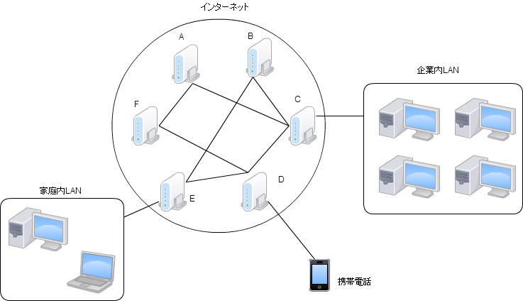

チームラボ オンラインスキルアップ課題
チームラボ オンラインスキルアップ課題
STEP1-1.インターネットのしくみ
インターネットとは、家庭内LANや企業内LAN、携帯電話網などのネットワーク同士を繋ぐ、世界規模の通信網のことです。インターネットに接続するにはルータなどの機器を使用します。インターネットに接続する機器にはIPアドレスと呼ばれる固有番号(176.32.93.81 など)が割り当てられており、通信の際にはIPアドレスを用いて接続先を指定することになっています。しかし、IPアドレスは数値列であり人間には分かり辛いため、一般には英数字列で名前（ドメイン名と呼ばれる www.team-lab.com など）を付け、IPアドレスとドメイン名を関連付けることによって、IPアドレスの代わりにドメイン名で接続することができるようになっています。

上記の図を見て分かるとおり、各ルータなどのネットワーク機器は他の全ての機器と接続されているわけではありません。そのため、例えばAがBへ送信したデータはCを中継してバケツリレー方式で受信されることになります。
インターネットにおいて、リクエストを送信する側をクライアント、それを受けてレスポンスを返す側をサーバと呼びます。クライアントとサーバはプロトコル（通信規約）に従い通信を行います。サーバには様々な種類のものがあります。一般に1つのIPアドレス上で複数の種類のサーバが動いてることが多く、通信の際にこれらを区別するためにポート番号という0から65535までの数値が用いられます。
| プロトコル | 主なポート番号 | 用途 |
|---|---|---|
| HTTP | 80 | Webサーバとの送受信 |
| FTP | 20, 21 | ファイル転送 |
| SMTP | 25 | メール送信 |
| POP3 | 110 | メール受信 |
| SSH | 22 | 暗号化通信 |
[課題]DNSについて調べよう
DNSはIPアドレスとドメイン名を関連付けるシステムです。どのような動作をするのか調べてみましょう。